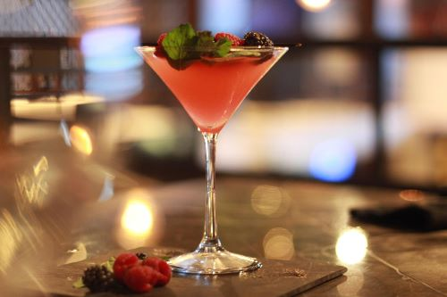
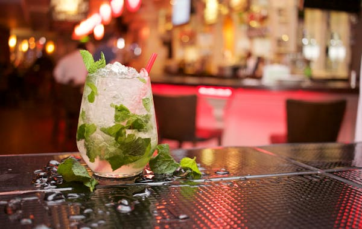
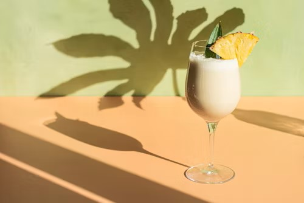

Descoperă magia mixologiei cu Amber & Essence
✨ Cocktailuri rafinate pentru momente speciale
Misiunea noastră
Să inspirăm iubitorii de mixologie cu ingrediente autentice și tehnici inovatoare.
Călătoria ta
Să înveți tehnici de preparare, rețete delicioase și să îți surprinzi prietenii alături de noi!
👉 Descoperă rețetelePovestea din spatele paharului
🍹 Băutura săptămânii: The Clover Club
Un clasic din Philadelphia, cu gin aromat, lămâie proaspătă și sirop de zmeură, învăluit într-o spumă fină de albuș. 💬 Fun fact: Preferat de gentlemenii din secolul trecut — acum perfect pentru tine! 👉 Încearcă-l și impresionează-ți prietenii!
Știați că...
Cel mai vechi cocktail documentat este Old Fashioned, apărut în anii 1800 și considerat încă un simbol al mixologiei clasice!
📅 Eveniment special
Atelier de Mixologie - Secretele unui cocktail perfect
Vino să descoperi tehnici inedite de preparare a cocktailurilor și să înveți de la cei mai buni mixologi! Locuri limitate - rezervă acum!
🎁 Surpriză pentru membrii comunității
În această lună, toți utilizatorii care împărtășesc rețetele lor preferate pot câștiga un set exclusiv de pahare pentru cocktailuri!
Ingrediente și tipuri de alcool
| Ingrediente | Vodka | Rom | Whisky | Gin | Tequila |
|---|---|---|---|---|---|
| Lămâie | |||||
| Zahăr | |||||
| Apă tonică | |||||
| Sirop grenadine | |||||
| Mentă proaspătă | |||||
🍹 Cocktailuri încercate
⭐ Rețeta favorită
🗓️ Ultima activitate
🏅 Nivel mixolog
Rețete de cocktailuri
Dulci, fresh, răcoritoare, cu sau fără alcool, acum ai la dispoziție o multitudine de rețete, ca să alegi exact ce îți place!
Cocktailuri clasice
-
Martini

Descriere
Un cocktail elegant și clasic, simplu, dar sofisticat, preferat de cunoscători.
Ingrediente (~120 ml /o porție)
ml oz shot
60 ml /2 oz /1.2 shots gin sau vodcă
10 ml /0.34 oz /0.2 shot vermut dry
1 măslină verde sau o coajă de lămâie (pentru decor)
Gheață (pentru răcire, nu se servește în pahar)
Mod de preparare
Umple un pahar de mixare cu gheață.
Toarnă ginul (sau vodca) și vermutul peste gheață.
Amestecă ușor cu o lingură timp de 20-30 secunde.
Strecoară lichidul într-un pahar de Martini rece.
Decorează cu o măslină verde sau o coajă de lămâie.
Servește rece și savurează!
Cocktailuri răcoritoare
-
Mojito

Descriere
Cocktail răcoritor cubanez cu rom, lime și mentă, perfect pentru zilele călduroase.
Ingrediente (~350 ml /o porție)
ml oz shot
50 ml /1.7 oz /1 shot rom alb
25 ml /0.85 oz /0.5 shot suc de lime proaspăt
10 ml /0.34 oz /0.2 shot sirop de zahăr (2/3 zahar, 1/3 apă)
6-8 frunze de mentă
apă minerală (completare)
1/2 lime
Mod de preparare
Pune bucățile de lime și siropul de zahăr într-un pahar.
Adaugă frunzele de mentă și presează-le ușor cu un muddler.
Toarnă romul și umple paharul pe jumătate cu gheață zdrobită.
Amestecă ușor cu o lingură lungă.
Completează cu apă minerală și mai adaugă gheață.
Decorează cu o crenguță de mentă și servește cu un pai.
Cocktailuri îndulcite
-
Piña Colada

Descriere
Un cocktail tropical cremos cu rom, ananas și cocos, ideal pentru vacanțe exotice.
Ingrediente (~350 ml /o porție)
ml oz shot
50 ml /1.7 oz /1 shot rom alb
100 ml /3.4 oz /2 shots suc de ananas
50 ml /1.7 oz /1 shot cremă de cocos
10 ml /0.34 oz /0.2 shot lapte condensat (opțional, pentru extra dulceață)
1 cană gheață zdrobită
felie de ananas și cireșă maraschino (pentru decor)
Mod de preparare
Pune romul, sucul de ananas și crema de cocos într-un blender.
Adaugă gheața zdrobită și, opțional, laptele condensat.
Amestecă bine până obții o textură cremoasă și fină.
Toarnă într-un pahar înalt și decorează cu o felie de ananas și o cireșă.
Servește cu un pai și bucură-te de gustul tropical!
Cocktailuri fără alcool (mocktailuri)
Cocktailuri pe bază de lichior
Cocktailuri pentru petreceri
Alege cocktailul potrivit
Nu știi ce cocktail să încerci?
Fie că vrei ceva răcoritor, dulce sau cu un kick puternic, avem soluția! Alege-ți băutura perfectă pe baza preferințelor tale!
Întrebări frecvente
Ce este mixologia?
Mixologia este arta și știința preparării cocktailurilor. Un mixolog creează și experimentează cu rețete de băuturi, combinând arome și tehnici pentru a obține un echilibru perfect
Ce diferență este între un barman și un mixolog?
Un barman servește și prepară băuturi, în timp ce un mixolog creează rețete noi, explorează combinații de arome și perfecționează tehnici avansate de preparare.
Care sunt cele mai simple cocktailuri pe care le pot face acasă?
Câteva opțiuni ușor de realizat sunt Gin Tonic, Cuba Libre, Screwdriver și Spritz.
Cum știu cât de tare este băutura pe care vreau să o prepar?
Formula pentru tăria alcoolică este următoarea:
Pot folosi miere sau alt îndulcitor în loc de zahăr?
Da! Mierea, siropul de agave sau siropul de arțar sunt alternative excelente, dar trebuie diluate puțin înainte de utilizare pentru a se amesteca bine.
Care este regula de bază pentru echilibrul aromelor într-un cocktail?
O regulă clasică este proporția 2:1:1 - două părți alcool, o parte aciditate (zeamă de citrice) și o parte îndulcitor (sirop, lichior).